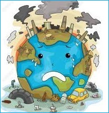
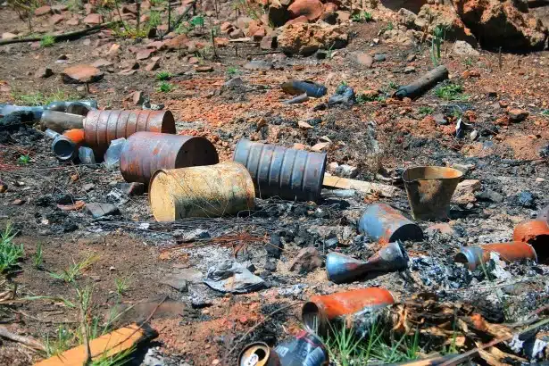

La contaminación ambiental es uno de los principales
problemas que se está dando a nivel global desde ya hace mucho tiempo,
afectando a todo el planeta, a su biodiversidad y a la salud de las personas.
Son diferentes los tipos de contaminación que existen,
todo depende de la zona o elemento que se ve afectado y del tipo de agentes
contaminantes que producen el problema.
Toda contaminación está causando grandes consecuencias
a las que hay que poner solución ver más |
 |
Consecuencias de la contaminación
-
Disminución de recursos como la escasez de agua
-
Aumento del calentamiento global
-
Desequilibrio en el ecosistema
TIPOS DE CONTAMINACIÓN
Fuentes de contaminación |
Descripción |
Imagen |
Animales |
Causa complicaciones respiratorias en perros
y gatos, sufriendo afectaciones en pulmones y mucosas
que pueden resultar en pérdida del olfato, un sentido
fundamental, ya que es a partir del sentido okfatorio
que se comunica entre ellos, reconociendo jerarquías y
estado de salud.
|  |
Suelo |
Esta se genera cuando se depositan desechos
peligrosos en estado líquido o solído al suelo.En este
sentido,las plantas absorben los contaminantes a través
de sus raíces.Posteriormente, los animales que habiten en
la zona contaminada y se alimenten de estas plantas podrian
sufrir envenamiento, vómito y falta de coordinación. ver más
|  |
Agua |
Las principales fuentes de contaminación puntual
del agua son las estaciones depuradoras y de tratamiento
de agua residuales, mientras que en el caso de la
contaminación difusa las principales fuentes son las
agrícolas y las centrales eléctricas alimentadas con
combustibles fósiles (a través del áire).
|  |
Alimentos |
Las principales vías de contaminación del
alimento son el aire, polvo o tierra, contacto con utensilios,
superficies u otos alimentos contaminados, manos sucias, agua contaminada
insectos (moscas, escarabajos) y roedores.
|  |
ver más